Zusammenhang impliziert i.A. keinen Wegzusammenhang
1. Satz
Sei  ein zusammenhängender, topologischer Raum.
Dann ist
ein zusammenhängender, topologischer Raum.
Dann ist  i.A. nicht wegzusammenhängend
i.A. nicht wegzusammenhängend
2. Beweis
Folgt aus der topologist's sine curve:
2.1. Wegzusammenhang
Es gilt für die Pfadkomponenten von 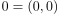 und 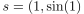:
z.B. indem man Wege 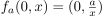 bzw. 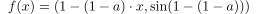 wählt.
Wir zeigen  :
Angenommen wir hätten einen Weg
:
Angenommen wir hätten einen Weg  von
von  nach
nach  .
Da 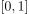 Kompakt ist, folgt dass gleichmäßig stetig ist (vgl. gleichmäßige stetigkeit eines Wegs).
Damit folgt, dass für 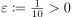 ein globales 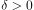 existiert mit 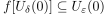.
Sei 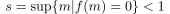, so gilt für 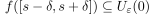 mit einem 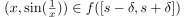
Dies ist aber ein Widerspruch, da ein hinreichend kleines 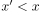 existiert mit 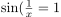, welches nach Zwischenwertsatz den Wert 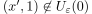 annimmt.
.
Da 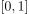 Kompakt ist, folgt dass gleichmäßig stetig ist (vgl. gleichmäßige stetigkeit eines Wegs).
Damit folgt, dass für 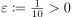 ein globales 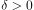 existiert mit 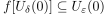.
Sei 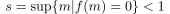, so gilt für 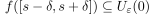 mit einem 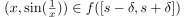
Dies ist aber ein Widerspruch, da ein hinreichend kleines 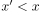 existiert mit 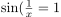, welches nach Zwischenwertsatz den Wert 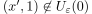 annimmt.
2.2. Zusammenhang
Wir wissen, dass Wegzusammenhang Zusammenhang impliziert
Folgt aus der Aussage über die Vereinigung von überlappenden zusammenhängenden Mengen:
Sei  eine Umgebung von
eine Umgebung von  , so existiert für
, so existiert für  eine epsilon-Umgebung 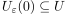.
Dabei gilt 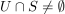, z.B. für 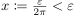 und 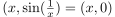
eine epsilon-Umgebung 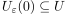.
Dabei gilt 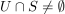, z.B. für 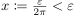 und 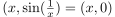